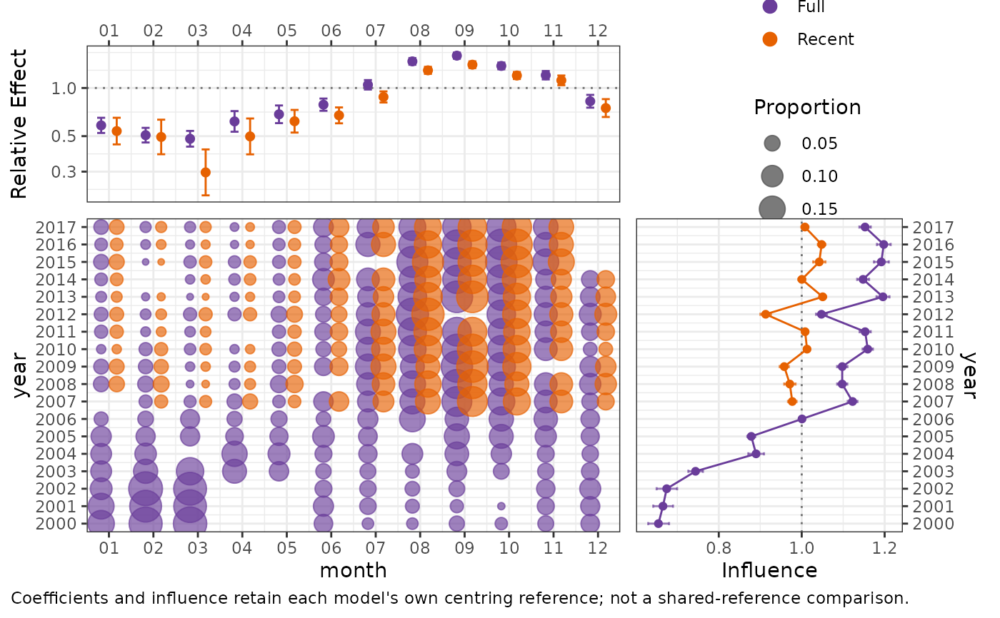

Display one CDI, or overlay several model runs within the same three-panel CDI layout. Saved diagnostics are plotted without recalculating estimates, uncertainty intervals, or centring references.
Usage
plot_cdi(
fits,
labels = NULL,
year = NULL,
term = NULL,
component = NULL,
years = c("union", "overlap"),
coefficient_reference = "centred",
coefficient_scale = "auto",
coefficient_order = "original",
order_by = NULL,
colours = NULL,
...
)Arguments
- fits
A fitted model supported by
influ(), aninflu_diag, or a non-empty list of either. A named list supplies default model labels.- labels
Optional unique, non-empty model labels.
- year
Optional focus-variable name when calculating diagnostics from models. Saved diagnostics must already use this focus.
- term
One term shared by all diagnostics. Defaults to the first influence term in the first diagnostic.
- component
One component shared by all diagnostics. This must be supplied when several components have coefficient summaries.
- years
"union"(default) displays all available years;"overlap"displays years available in every diagnostic. Integer calendar years keep their chronological spacing, including empty positions for missing years. Consistently formatted fishing years such as"2020/21"or"2020-2021"are also recognised; arbitrary text labels are not reinterpreted as years.- coefficient_reference, coefficient_scale, coefficient_order
As in
plot.influ_diag(). Multiple-model plots retain each diagnostic's own stored reference; they do not calculate a common centring reference.- order_by
For ascending or descending ordering with multiple models, the label or number of the model supplying the ordering estimates. Levels unavailable in that model are appended in their original order.
- colours
For multiple models, optional colours, one per model. A named vector is matched to model labels. The same colours identify coefficients, bubbles, and lines. A single CDI retains its established purple styling.
- ...
Arguments passed to
influ()for fitted-model inputs. These do not refit models. Plotting a single diagnostic delegates to its existing CDI renderer. In mixed lists these arguments apply only to fitted models; saved diagnostics are unchanged. Arguments in...are rejected when all inputs are saved diagnostics, rather than silently ignoring them.
Value
A patchwork object. For multiple models its cdi_comparison
attribute contains compact display tables and the common axis settings,
without fitted models or posterior draws.
Details
Coefficients and distribution bubbles use identical horizontal model offsets within each category. Bubble areas share one proportion scale. Missing categories and years are not filled with zero, and influence lines do not connect across missing integer years. The overlap view only filters displayed years: coefficients retain their original reference.
Compared effects must have compatible components, links, and orientations.
Matching scales do not establish that responses or model populations are
scientifically comparable. In particular, encounter, positive-response,
zero-probability, and combined-response components are not interchangeable.
Interval-labelled continuous bins cannot safely be matched from rounded
compact summaries, so multi-model comparisons reject them. To compare such
covariates, define shared categorical strata before calculating diagnostics.
Aggregate latent-field effects are also rejected when their stored levels
are field values rather than identified strata. An aggregate
random_effects term is comparable only when both diagnostics record the
same single random-intercept grouping variable and retain its level IDs.
The comparison caption identifies model-native centring. Model-coded
coefficients (coefficient_reference = "model") remain available for a
single CDI, but multiple-model plots require centred summaries because
compact diagnostics cannot verify identical native contrast coding.
A stored prediction_grid label alone does not prove that two models used
identical reference data and weights. No shared-reference claim is made.
Examples
data(lobsters_per_pot)
full <- glm(lobsters ~ year + month + depth + soak, poisson(),
data = lobsters_per_pot)
recent_data <- droplevels(subset(lobsters_per_pot,
as.integer(as.character(year)) >= 2007))
recent <- update(full, data = recent_data)
diagnostics <- list(Full = influ(full, focus = "year"),
Recent = influ(recent, focus = "year"))
plot_cdi(diagnostics, term = "month")
